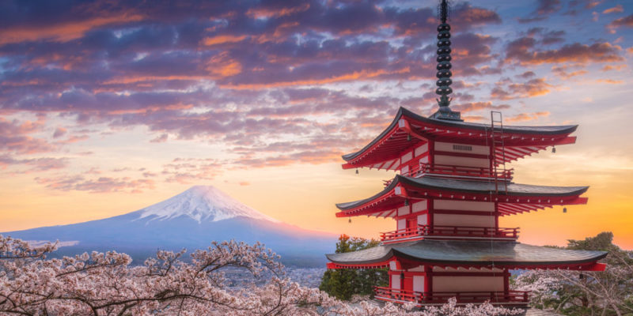
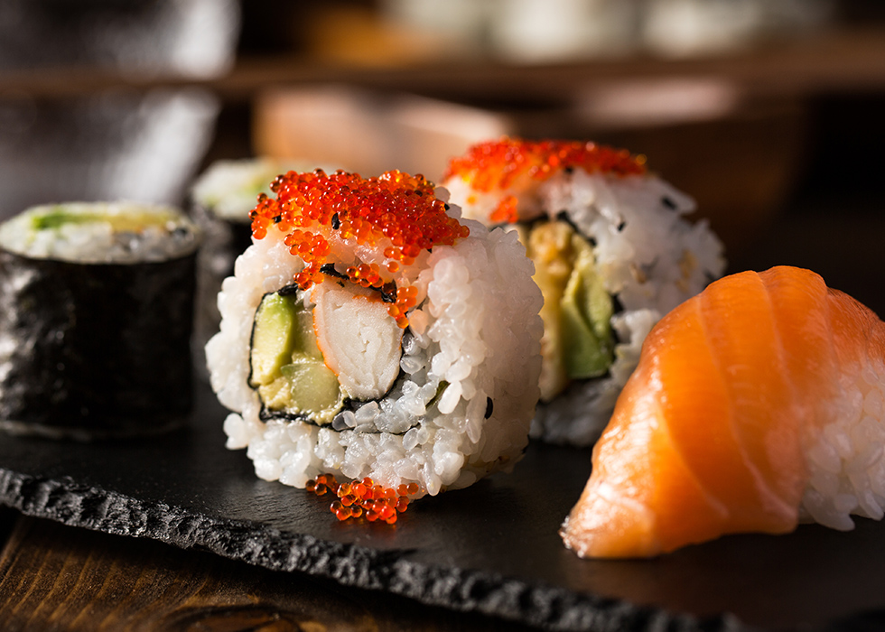
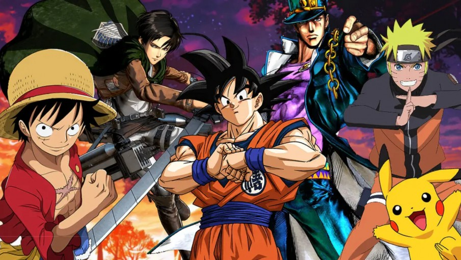

La vestimenta contemporánea, en cambio, tiende hacia lo exótico, lo rococó y hacia estilos de diseñador hipercapitalistas, que han convertido a la moda en Japón en una suerte de reflejo extremo de ciertas tendencias occidentales.

Como su nombre lo indica, la cultura de
Japón o cultura japonesa resume el modo de vivir, relacionarse
y concebir el mundo de la región nipona, vale decir, de los
habitantes de la nación japonesa y su cultura ancestral.

La cultura japonesa se rige
en cuanto a relaciones interpersonales por el giri, nombre
otorgado al conjunto de deber, obligación y honor, lo cual
genera bastante contraste respecto a la tradición individualista de Occidente.
Las situaciones familiares son bastante más laxas en asuntos relacionados
a la moralidad o la conducta socialmente aceptada, pero a cambio la relación
con los superiores jerárquicos o con los desconocidos es en extremo formal.
También se profesa un respeto enorme a los ancianos y a los antepasados,
a quienes a menudo se rinde culto espiritual en altares hogareños.
La vestimenta tradicional japonesa destaca por el uso de prendas únicas
como el kimono, un vestido largo y colorido usado tanto por hombres, mujeres
e infantes, que se ata por la cintura con un cinto de tela (obi) y cuya complejidad
ha conducido a su desuso. Existe también un calzado típico de madera (geta) a la manera de zuecos.
La vestimenta contemporánea, en cambio, tiende hacia lo exótico, lo rococó
y hacia estilos de diseñador hipercapitalistas, que han convertido a la moda en
Japón en una suerte de reflejo extremo de ciertas tendencias occidentales.
La comida japonesa goza de mucha popularidad en los tiempos corrientes,
a punto tal de convertir el sushi (a base de pescado crudo) en un plato
típico de las ferias de comida rápida en occidente.

En Japón, anime se refiere a todo tipo de animación , incluso a los dibujos
animados estadounidenses. Para el resto del mundo, el anime se refiere específicamente
a la animación japonesa, más específicamente a la animación de Japón en un estilo específico.
Fuera de Japón, el anime se caracteriza por personajes bellamente dibujados con ojos grandes.

En comparación con los dibujos animados, los personajes están mejor definidos y tienen un
aspecto "realista", y la trama suele ser más compleja con el desarrollo del personaje y la
progresión de la historia en lugar de episodios aleatorios.
Aunque hay animes que no encajan en este estereotipo.